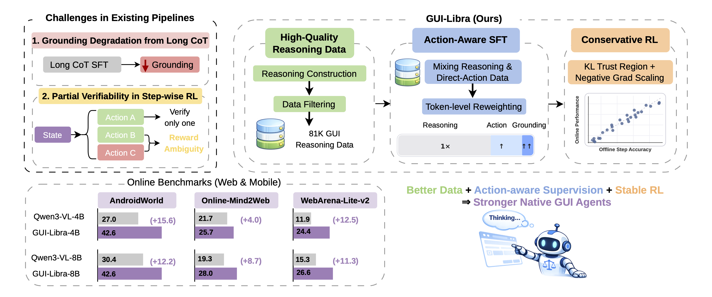

GUI-Libra
Training Native GUI Agents to Reason and Act with Action-aware Supervision and Partially Verifiable RL
1UIUC 2Microsoft 3UNC-Chapel Hill

Open-source native GUI agents have made strides in visual grounding and low-level control, but still fall short on long-horizon tasks that require both planning and precise execution. We pinpoint two root causes: scarce high-quality reasoning data aligned with actions, and post-training pipelines that ignore the specifics of GUI agents. In particular, long chain-of-thought SFT tends to degrade grounding, while step-wise RL suffers from partial verifiability—multiple valid actions exist per step, yet only one is used for verification. GUI-Libra tackles these issues with a tailored recipe: an 81K curated reasoning dataset, action-aware SFT that balances reasoning and direct-action supervision with token reweighting, and conservative RL with KL regularization and success-adaptive scaling. On AndroidWorld, Online-Mind2Web, and WebArena-Lite-v2, GUI-Libra-4B and GUI-Libra-8B consistently outperform their base models, with gains up to +15.6% and +12.2% on AndroidWorld, +4.0% and +8.7% on Online-Mind2Web, and +12.5% and +11.3% on WebArena-Lite-v2.
Action-aligned reasoning data with construction and filtering pipeline. Agreement filtering via action re-prediction and coordinate alignment via bounding-box verification.
Mixed reasoning-then-action and direct-action supervision. Action-aware token reweighting to emphasize action and grounding tokens, mitigating CoT-induced grounding degradation.
KL-regularized GRPO under partial verifiability. Success-adaptive negative gradient scaling to reduce bias from ambiguously negative outcomes.
GUI-Libra consistently improves both step-wise accuracy and end-to-end task completion across web and mobile benchmarks.
Acc. = final average success rate. * from original papers.
| Model | Acc. | Δ vs Base |
|---|---|---|
| Qwen2.5-VL-3B (Baseline) | 3.5 | — |
| GUI-Libra-3B (Ours) | 25.2 | +21.7 |
| Qwen2.5-VL-7B (Baseline) | 7.8 | — |
| GUI-Libra-7B (Ours) | 29.6 | +21.8 |
| Qwen3-VL-4B (Baseline) | 27.0 | — |
| GUI-Libra-4B (Ours) | 42.6 | +15.6 |
| Qwen3-VL-8B (Baseline) | 30.4 | — |
| GUI-Libra-8B (Ours) | 42.6 | +12.2 |
| Representative baselines | ||
| UI-TARS-1.5-7B | 16.5 | — |
| Qwen2.5-VL-32B | 29.6 | — |
| Qwen2.5-VL-72B | 32.2 | — |
| Qwen3-VL-32B | 34.8 | — |
| GPT-4.1 + UGround-v1-7B | 37.4 | — |
| GPT-5-mini + UGround-v1-7B | 40.9 | — |
| GPT-4o + UGround-v1-7B | 42.6 | — |
| GPT-5 + UGround-v1-7B | 48.7 | — |
Average = final average success rate across GitLab, MAP, Reddit, Shopping, ShoppingAdmin. * from Liu et al. (2025c).
| Model | Average | Δ vs Base |
|---|---|---|
| Qwen2.5-VL-3B (Baseline) | 0.8 | — |
| GUI-Libra-3B (Ours) | 16.7 | +15.9 |
| Qwen2.5-VL-7B (Baseline) | 4.9 | — |
| GUI-Libra-7B (Ours) | 22.6 | +17.7 |
| Qwen3-VL-4B (Baseline) | 11.9 | — |
| GUI-Libra-4B (Ours) | 24.4 | +12.5 |
| Qwen3-VL-8B (Baseline) | 15.3 | — |
| GUI-Libra-8B (Ours) | 26.6 | +11.3 |
| Representative baselines | ||
| Qwen2.5-VL-72B* | 15.6 | — |
| UI-TARS-1.5-7B* | 20.8 | — |
| ScaleCUA-7B | 23.9 | — |
| UI-TARS-72B-DPO* | 23.4 | — |
| ScaleCUA-32B | 24.0 | — |
| GPT-4o + ScaleCUA-7B* | 28.6 | — |
o4-mini and WebJudge-7B as judges. Avg. Overall = average of both judges' Overall scores.
| Model | o4-mini Overall | WebJudge-7B Overall | Avg. Overall | Δ vs Base |
|---|---|---|---|---|
| Qwen2.5-VL-3B (Baseline) | 1.3 | 8.3 | 4.8 | — |
| GUI-Libra-3B (Ours) | 13.7 | 29.0 | 21.3 | +16.5 |
| Qwen2.5-VL-7B (Baseline) | 9.7 | 22.0 | 15.8 | — |
| GUI-Libra-7B (Ours) | 17.7 | 33.3 | 25.5 | +9.7 |
| Qwen3-VL-4B (Baseline) | 15.7 | 27.7 | 21.7 | — |
| GUI-Libra-4B (Ours) | 20.0 | 31.3 | 25.7 | +4.0 |
| Qwen3-VL-8B (Baseline) | 11.0 | 27.7 | 19.3 | — |
| GUI-Libra-8B (Ours) | 19.3 | 36.7 | 28.0 | +8.7 |
| Representative baselines | ||||
| Qwen2.5-VL-32B | 7.3 | 19.7 | 13.5 | — |
| ScaleCUA-7B | 17.0 | 30.3 | 23.7 | — |
| ScaleCUA-32B | 17.0 | 30.0 | 23.5 | — |
| Qwen3-VL-32B | 19.3 | 34.3 | 26.8 | — |
| GPT-4.1 + UGround-v1-7B | 22.7 | 36.7 | 29.7 | — |
Example trajectories of GUI-Libra on AndroidWorld and WebArena-Lite-v2. Swipe, use the arrows, or click the dots to switch.
← Swipe to view WebArena example →
@article{yang2025guilibra,
title={GUI-Libra: Training Native GUI Agents to Reason and Act with Action-aware Supervision and Partially Verifiable RL},
author={Yang, Rui and Wu, Qianhui and Wang, Zhaoyang and Chen, Hanyang and Yang, Ke and Cheng, Hao and Yao, Huaxiu and Peng, Baoling and Zhang, Huan and Gao, Jianfeng and Zhang, Tong},
journal={arXiv preprint},
year={2025}
}
 Code
Code